요청과 범위를 한곳에
T1-06 · T2 · T3 — 반복 입력하던 조건을 접고 요청 폼을 앞에 배치했습니다. 원문 저장과 세션 초안의 보존 범위를 구분합니다. 조건 요약은 대화 이력 앞에 위치합니다.

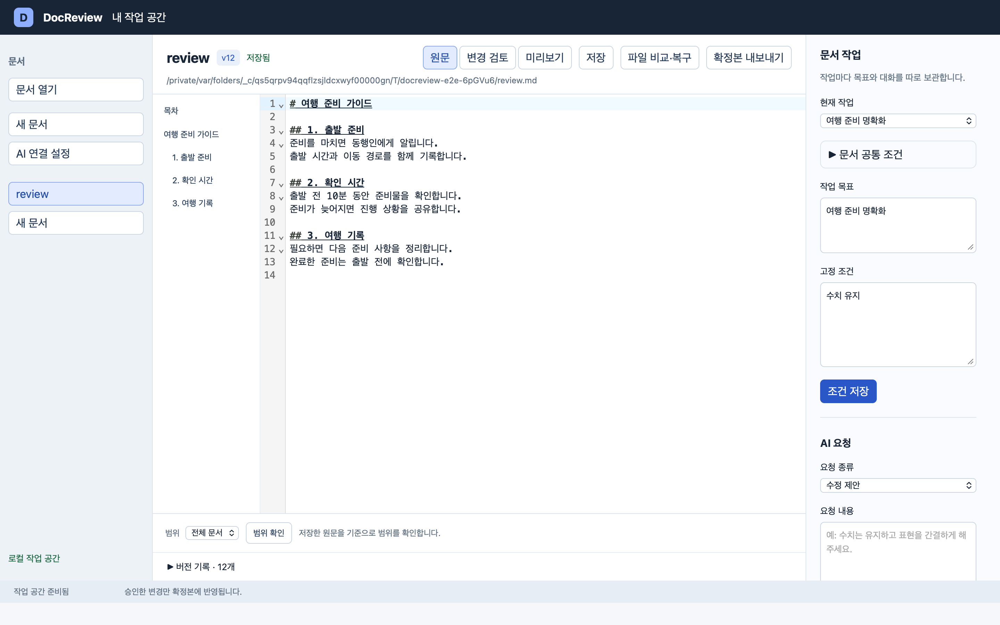

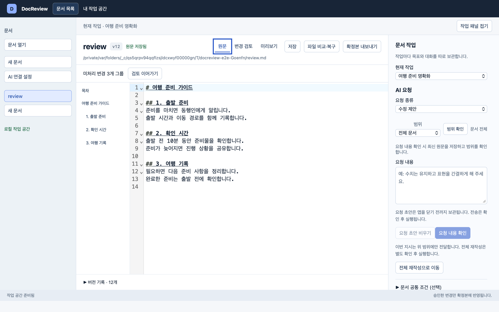
선택한 변경과 승인 행동 연결
T4 — 선택 번호·제목·승인·거절을 비교 위로 옮겼습니다. 읽기 위치와 선택 대상의 차이를 설명하고, 전체 승인은 별도 행동과 건수로 구분합니다.

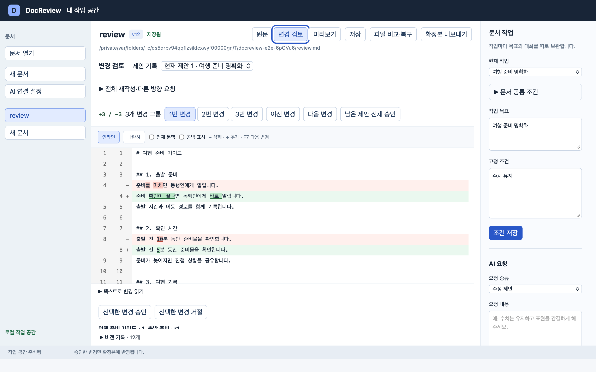

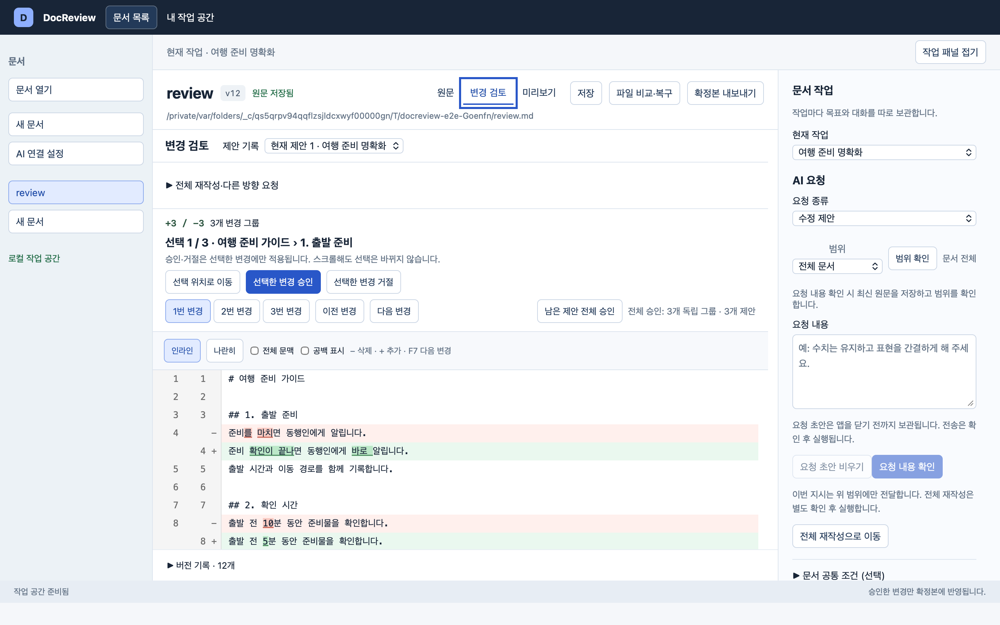
작성 중인 코멘트와 대상 보존
T1 · T7-03 — 화면을 왕복해도 코멘트와 인용을 보존합니다. 저장 후에는 재제안 작성으로 이동할 수 있으며 자동 실행하지 않습니다. 실제 보존 여부는 이미지가 아닌 회귀 검사로 확인합니다.

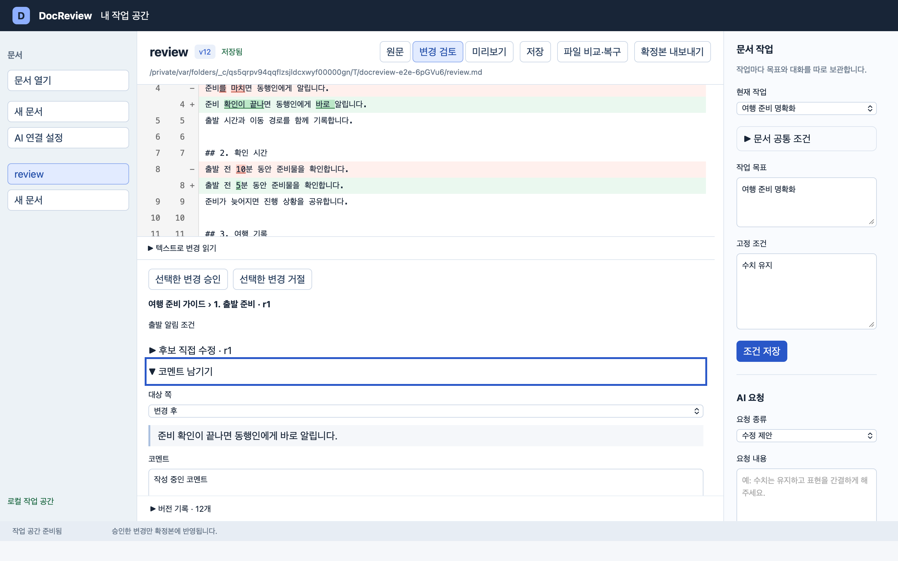

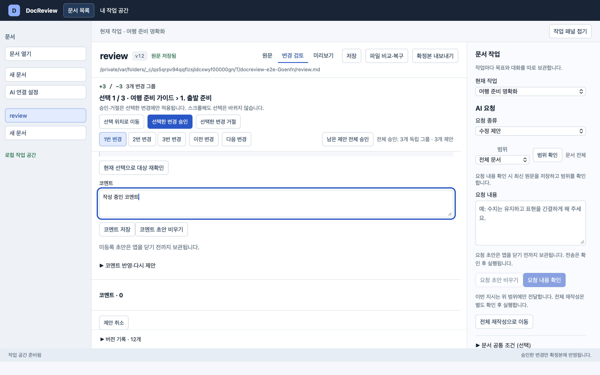
제안이 바뀌면 대상을 다시 확인
T1-05 · T0-06 — 후보를 수정해 revision이 바뀐 실제 상태입니다. 기존 초안·인용을 남기고 저장을 막습니다. 현재 선택으로 재확인해야 등록할 수 있습니다. 아래 실제 상태는 합성 문서·가짜 CLI·임시 DB로 재현했습니다. 코멘트 화면은 입력란을 확인할 수 있도록 스크롤한 위치입니다.
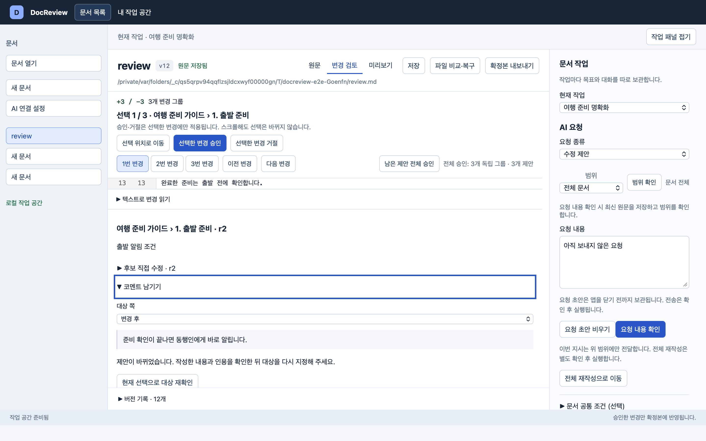
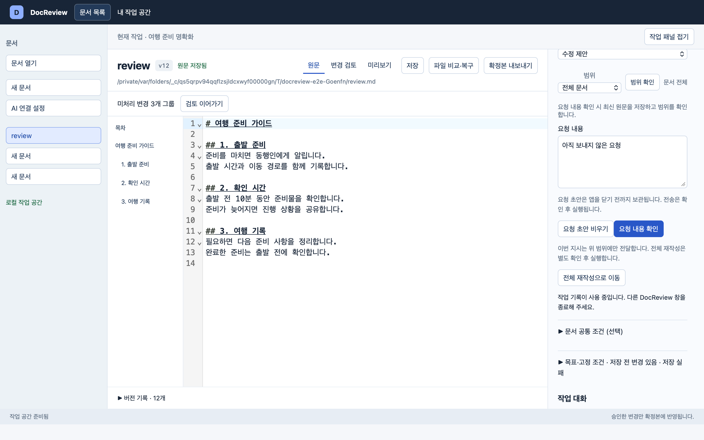
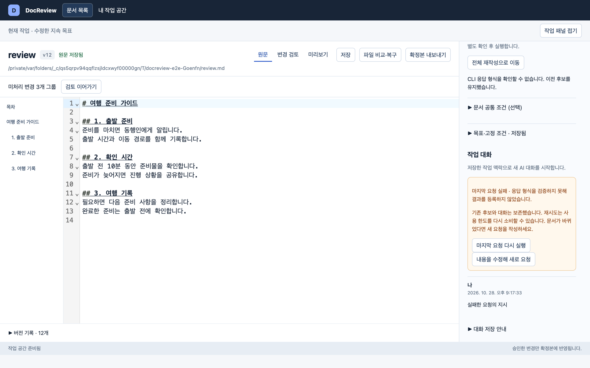
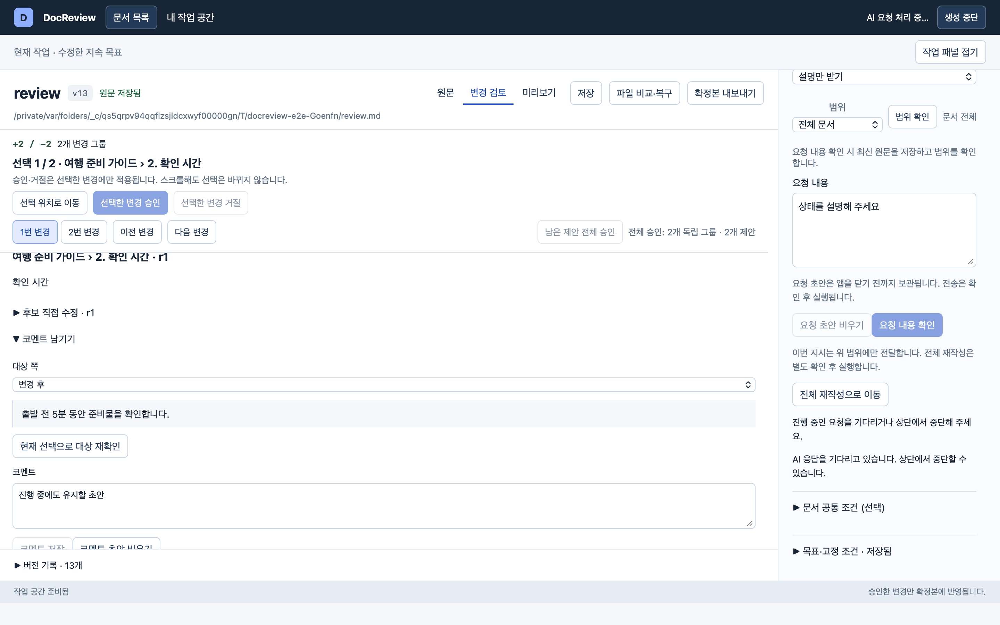
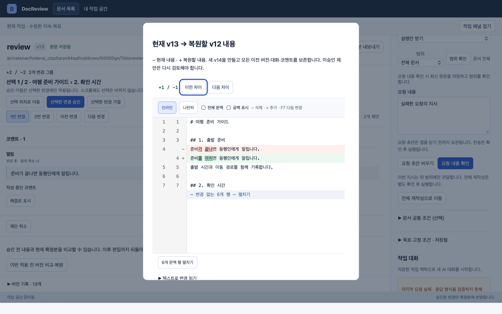
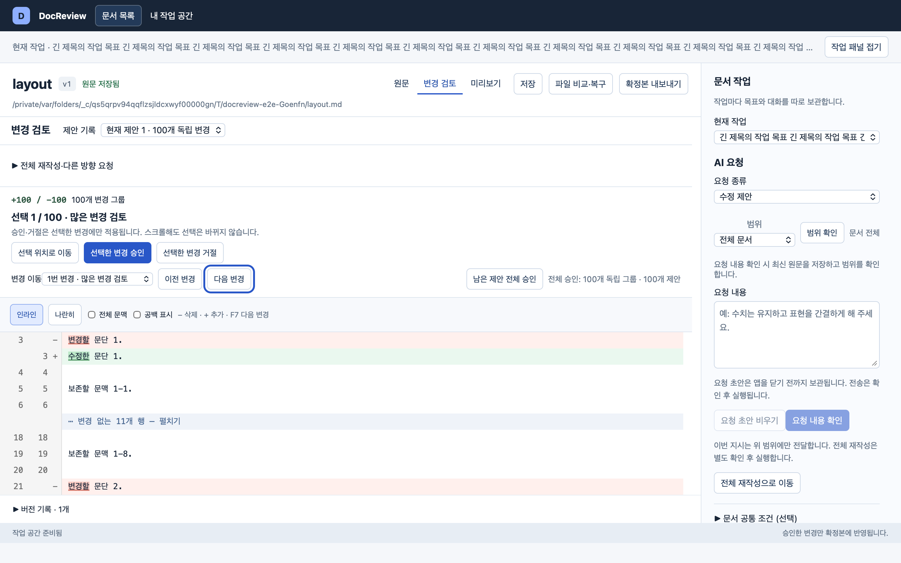
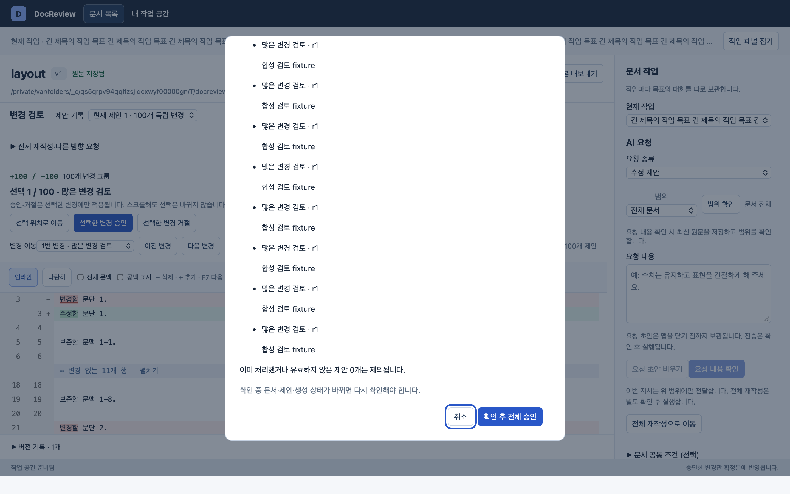
창 크기와 실제 WebView 확대
T6 — 아래 9개 조합에서 문서·작업 패널 왕복, 초안 보존, 가로 넘침 없음과 요청·승인 버튼 중앙의 실제 클릭 대상을 확인했습니다. 작은 창은 본문과 작업 패널을 전환하며 세로로 스크롤합니다. 800×600·200%에서는 한 번에 보이는 내용이 적습니다. 버튼 도달 검사는 읽기 편안함이나 사용자 과업 평가를 대신하지 않습니다.
| 창 | 100% viewport | 150% viewport | 200% viewport |
|---|---|---|---|
| 800×600 | 800×568 | 533×378 | 400×284 |
| 1280×800 | 1280×768 | 853×512 | 640×384 |
| 1440×900 | 1440×868 | 960×578 | 720×434 |
| 창 | 100% | 150% | 200% |
|---|---|---|---|
| 800×600 | 검토 · 요청 | 검토 · 요청 | 검토 · 요청 |
| 1280×800 | 검토 · 요청 | 검토 · 요청 | 검토 · 요청 |
| 1440×900 | 검토 · 요청 | 검토 · 요청 | 검토 · 요청 |


요청과 비교를 한 화면에서 읽는 기존 구조를 유지했습니다. 제안의 별도 상세 패널 대신 기존 코멘트 폼을 유지해 변경 범위를 줄였습니다. 좁은 창에서는 선택 도구를 고정하지 않아 스크롤로 내용을 읽을 수 있습니다.